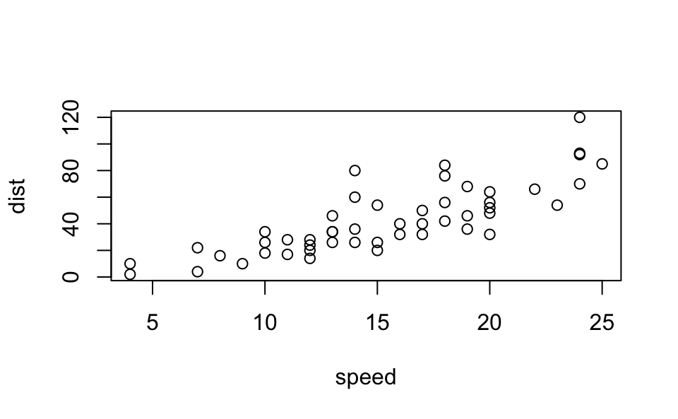

[1] 2Quarto document from class 1/17
Part 1 - Intro
Quarto
Quarto enables you to weave together content and executable code into a finished document. To learn more about Quarto see https://quarto.org.
| Easy to insert | Table | Col3 |
|---|---|---|
Running Code
When you click the Render button a document will be generated that includes both content and the output of embedded code. You can embed code like this:
Part 2 - Methods
Some methods
You can add options to executable code like this
[1] 4The echo: false option disables the printing of code (only output is displayed).
Some more methods

Figure 1 shows a scatterplot of the cars dataset
Now adding a table
| speed | dist |
|---|---|
| 4 | 2 |
| 4 | 10 |
| 7 | 4 |
| 7 | 22 |
| 8 | 16 |
| 9 | 10 |
Very cool package gt for tables in html. For pdf, maybe kableExtra is preferred.
| speed | dist |
|---|---|
| 4 | 2 |
| 4 | 10 |
| 7 | 4 |
| 7 | 22 |
| 8 | 16 |
| 9 | 10 |
Table 1 is the gt version of the head of the cars data set. This is from (Shapiro et al. 2017)
References
Shapiro, Heather B., Clara H. Lee, Noelle E. Wyman Roth, Kun Li, Mine Çetinkaya-Rundel, and Dorian A. Canelas. 2017. “Understanding the Massive Open Online Course (MOOC) Student Experience: An Examination of Attitudes, Motivations, and Barriers.” Computers & Education 110 (July): 35–50. https://doi.org/10.1016/j.compedu.2017.03.003.